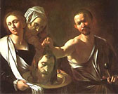
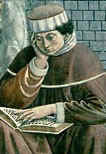

|
HORCA - de vid Ya la vid no puede más con tanto lujo sabroso; qué rebien ! resolverás su cansancio, horca, en reposo. Tomas el pulso a su acoso de inflamación moscatel: impides que tanta miel reo de su peso sea, y le ayudas, cirinea, a llevar su estado al fiel. Miguel Hernández (1910-1942) |
Ayer el santoral recordó la muerte de San Juan Bautista. 
Elemental, claro, pero no se me había ocurrido.
Por tratarse de un cura de estilo más bien contemporizador, me sorprendió gratamente; si hubiera sido otro tipo, me hubiera gustado menos (contrera que es uno).
-
... la cabeza de la ley, que es Cristo, es separada
del propio cuerpo, o del pueblo judaico,
y entregada a una joven pagana, es decir, a la Iglesia
Romana; y la joven se la da a su madre adúltera,
es decir, a la Sinagoga, que vendrá al fin a la fe.
Y el cuerpo de San Juan es enterrado, y su cabeza
colocada en una fuente; es decir, la letra humana
es ocultada y el Espíritu honrado y recibido en el altar.
PS: Via Jim, el texto de la Catena en inglés; en esa versión dice que el autor no es Jerónimo sino un "pseudo Jerónimo" (cosa que no dice mi versión). Lo cual significa, supongo, que corresponde a una obra desconocida o de atribución dudosa.
Me informan que Eduardo Galeano, (escritor militante de la izquierda progresista más pueril y exitosa del Río de la Plata) una vez más y desde la contratapa de Página 12, ha aplastado con su fina ironía y su poderosa inteligencia la moral católica: con un par de frases desarma siglos de teólogos, que deben retirarse humillados del campo de combate, musitando un "Maldición, no se me había ocurrido eso..."; mientras el público festeja y aplaude... :
-
"Leyendo esta última condenación del Vaticano, a uno le vienen ganas de preguntar a los sexólogos celestiales: si el matrimonio heterosexual es una “ley natural”, ¿por qué ustedes no se casan? Y si los homosexuales contradicen “el plan de Dios”, ¿por qué Dios los hizo así? "
PS: Chuaquín, desde España, furibundo radical, según se denomina (en el sentido standard-europeo de la palabra, claro) me acota: "Si Dios existe, también fabricó a los Galeanos, vaya"; lo cual es muy cierto, y puede leerse en distintos planos. En uno de ellos, podría ser una objeción (a la existencia de Dios, por ejemplo) mucho más fuerte que las objeciones literales de Galeano. Los argumentos de un ateo idiota no demostrarán nada, pero la existencia del ateo idiota (argumentos incluidos) podría hacer dudar de la existencia de un Dios creador perfecto...
El asesino místico se titula la nota-entrevista de Clarín.
Lo de "asesino", va porque el entrevistado es un actor que suele hacer de malo.
Lo de "místico"... porque estudió psicología (más exactamente, psicoanálisis).
Ni en el dominio (clarin.com )
ni el el texto la página principal especifica claramente que se trata de un diario argentino,
así que, por las dudas y para los de afuera, digámoslo: es un diario
argentino.
(PS: y como bien acota Ignacio: "en el peor
sentido de cada palabra")
Rutina casi diaria. Antes de salir de casa, manoteo de una cajita un puñado de monedas, para el colectivo y para la máquina de café; las guardo -sin mirar- en el bolsillo.
Cuando las saco para usarlas, me reencuentro con un cospel de subte, de tiempos inmemoriales (los subtes -metros- ahora usan tarjetas magnéticas, hace ya unos cuantos años); descarto el cospel ... pero no, no lo tiro, lo vuelvo a meter en el bolsillo.
Al llegar de nuevo a casa, entre los gestos rituales de llegada está el de desalojar los bolsillos -sin mirar, sin pensar- ... con lo cual el dichoso cospel inútil vuelve a caer a la cajita para reaparecer al día siguiente...
Son de esas cosas -como el caso la mancha de jabón que relata Jaime hoy- que
parecen material para una parábola, algún relato con moraleja
o intención didáctica. Esto debería dejar una enseñanza, uno piensa;
pero -por falta de imaginación, pereza, o acaso buen gusto- dejamos
el texto así; solito, sin aplicaciones, sin sentido y sin utilidad.
Como el cospel.
Hoy, 28 de agosto, es la fiesta del gran San Agustín.
Uno de los tipos más influyentes de la historia de la humanidad.
Por lo que a mí respecta, si no recuerdo mal -y con perdón
por esta incursión en el pantanoso terreno de la confidencia-
la cosa fue así:
En mi adolescencia -digamos, entre los 12 y los 17 años- yo
quería (confusamente) "ser feliz". Era -y soy- un tipo
más bien introvertido y nerd-libresco, por lo que
que esa felicidad tomaba (inevitable pero inconcientemente)
la forma de una especie de éxito social.
En ese aspecto no estaba contento conmigo;
en ese aspecto quería cambiar; y
-previsiblemente, y por suerte- en ese aspecto no tuve mayor éxito...
Allá por los 17-18 empecé con mis berretines intelectuales-literarios-filosóficos... Sábato, Sartre ...
mal comienzo, aunque comienzo al fin ... pero los que me pegaron
fuerte fueron Séneca, (con sus estoicas "Cartas Morales")
y Schopenhauer. (Mis acercamientos a la filosofía fueron
siempre más literarios que propiamente filosóficos-
ya conocemos nuestras limitaciones).
Así empecé el entrenamiento para poder despreciar esos
sueños de felicidad adolescentes (con cierta razón, aunque
hubiera en eso bastante de
zorra que no alcanzó las uvas),
y a meterme en el ancho
y trillado camino -que yo creía angosto y exclusivo entonces-
de los intelectuales pesimistas-cínicos-resentidos con ínfulas de sabios (Cortázar...).
Todo tiene su lado bueno, igual... Séneca me
hizo presentir la grandeza del estoicismo y desear vagamente
ese tipo de perfección moral-intelectual.
En aquellos tiempos, (18-19 años) creía encontrarme ante una alternativa vital que se expresaba (eso fue una de las pocas cosas que recuerdo haberme formulado explícitamente) en el dilema: "Felicidad o Sabiduría". Ahora lo veo como un dilema falso, tanto en los términos (lo que yo llamaba "felicidad" no era otra cosa que "placer"; y lo que yo llamaba "sabiduría"... ) como en la misma alternativa: en el fondo yo ya había tomado partido.
Por su lado, el finado Schopenhauer me había
fascinado con esa especie de pesimismo
radical y aparentemente (aparentemente
hasta para Borges) lúcido. El libre albedrío
es una ilusión, venía a decir, con mucha fuerza... literaria;
el hombre cree ser libre para tomar un camino u otro;
y a cada momento cree recorrer un camino decidido
por su propia voluntad; en realidad, está sometido
a leyes muy por encima suyo; de parecido modo, una piedra
que está cayendo, si tuviera conciencia, creería que
ella está decidiendo libremente su trayectoria y
creería (como uno): "voy aquí porque quiero;
si quisiera, podría ir hacia allá". Esto se ve -decía Schopenhauer-
en esos repetidos intentos de cambiar que tantos
hombres tienen, y que, para su asombro, nunca pueden
cumplir. No está en nuestro poder cambiar, no tenemos
libertad.
Con mi pequeña historia personal, eso me impresionaba.
Y, digamos... lo creí. Claro que esta visión cósmica,
no sólo encontraba confirmación en mi fracaso para
convertirme en un tipo feliz (exitoso socialmente, etc),
sino que además me daba pocas esperanzas en mis berretines
de intelectual ataraxiado. No recuerdo haberme formulado
esta conclusión así de terminante, pero sí recuerdo
esos años (alrededor de los 20) como los más desesperanzados
de mi vida.
No recuerdo cómo llegué, poco después, a leer las Confesiones de San Agustín;
(mis lecturas eran muy caóticas y azarosas, y no teniendo consejeros ni
amigos lectores, generalmente un escritor me hacía conocer a otro).
La cuestión es que la historia de San Agustín fue para mí
una especie de refutación existencial de Schopenhauer.
Un contraejemplo. Si se hubiera tratado
de una novela, yo la habría impugnado por "irreal". Pero no
era una novela; y conociendo a Agustín, uno no podía dejar
de reconocer que era de esos que ni engañan ni se engañan.
No diré que me convirtió, pero casi me demostró que la conversión
era posible. En ese momento, eso era mucho para mí.
Y había más. No era una mera refutación, sino que ponía a Schopenhauer
en su justo lugar; reconocía su cuota de verdad, importante.
Contra tantos ilusos e ilusionadores
(autoayudadores de hoy y de siempre) Sch. tenía razón: uno no puede
cambiar, uno no puede ser feliz, ni sabio, ni pleno, ni ... con
las propias fuerzas. Pero esa impotencia no es "natural";
somos débiles porque estamos enfermos; la enfermedad se llama
"pecado original", y el remedio se llama "gracia".

Me dirá alguno que esto es ir demasiado rápido. Y es así; ni yo fui tan rápido,
ni es tan claro el asunto. Y otro me dirá que yo no entendí a Schopenhauer,
que lo de San Agustín no demuestra nada, que la conversión de San Agustín
también fue una ilusión, o que Sch. no se refería a eso, o que de descreer
a Schopenhauer a creer en el pecado original hay un larguísimo trecho.
Todo eso es razonable, y podemos discutirlo.
Hoy, sin embargo, tanto tiempo después, y tanta agua pasada bajo el puente,
creo que en lo esencial mi intuición era verdadera.
Y si es así, le debo mucho a San Agustín. Como tantos. Vaya este
post a modo de homenaje (pobre San Agustín... seguramente a ligado homenajes
peores).
Ayer estaba revisitando algunos CDs de Suma Paz, y volví a escuchar esta cancioncita de Atahualpa Yupanqui.
Linda letra, realmente. Y la voz de Suma Paz es cosa especial, vale la pena conocerla. Acá puse un MP3 (1 MByte) de una parte.
con voz de nieve cumbreña,
y dulce me recordaba
las cosas de mi querencia.
Tú que puedes, vuélvete,
-me dijo el río llorando-.
Los cerros que tanto quieres, -me dijo-
allá te estan esperando.
Es cosa triste ser río ...
quién pudiera ser laguna ,
y oir el silbo del junco
cuando lo besa la luna.
Tú que puedes, vuélvete...
Qué cosas tan parecidas
son tu destino y el mio:
vivir cantando y penando
por esos largos caminos.
Tú que puedes, vuélvete...
Atahualpa Yupanqui
La noticia me suena un poquito demasiado satisfactoria, pero...
dicen que unos anglicanos contrataron un par de empresas de marketing para ganar fieles (por decirlo así). Las recomendaciones del estudio incluyeron: sacar las imágenes (y referencias) a Jesús en la cruz, las citas bíblicas y los sermones didácticos; y hacer de la asistencia al templo un evento social (encontrarse con amigos, escuchar música y sentir que te hablan "de corazón a corazón").
Otra sugirió un target: "apuntar con al público entre 30 y 40 años que vive bien pero que siente que algo le falta".
Lo de "vivir bien" es delicioso. Pero supongo que si a ese público le leemos aquello del Apocalipsis, si les decimos que acaso no viven bien -si es que viven- van a sentirse sermoneados, y se van a ir a otro blog o religión que les resulte más gratificante.
Si ser sentencioso es malo, ser crípticamente sentencioso (o sentenciosamente críptico) es peor.
Por ejemplo, y sin ir más lejos.
El blanco acaba de adelantar su torre en campo enemigo (Td6), y amenaza el caballo.
Parece una maniobra tan rutinaria como ineficaz, que se rechaza fácilmente moviendo el caballo a (por ejemplo) Cg5: tras el cambio de alfiles la torre debe retirarse y las negras no tienen problemas.
Pero, viendo esto, el negro se envalentona, y va por más: así encuentra la jugada Cd4, de apariencia mortífera, "tocando" al alfil "colgado" y al caballo que apoya a la torre, que a su vez queda "en orsay". Y así cae como un chorlito en la magnífica y sutil combinación preparada por el astuto jugador blanco, y que el lector atento sabrá descubrir.
(Una versión más fiel es la siguiente: jugué -partida
semirápida en Yahoo- la torre adelante porque no se me ocurrió
otra cosa. La movida de caballo me anonadó totalmente: me maldije
unos segundos por haberme olvidado del alfil colgado y por haber
metido esa torre en un lugar tan claramente desprotegido
y sin ninguna amenaza concreta... me creí perdido,
pensé en abandonar, y en un manotazo desesperado de ahogado
se me ocurrió la combinación que resultó salvadora. Sólo después de jugarla
vi cuán buena era, y después lo verifiqué con un programita...).
Una de las varias ventajas que tenemos los hispano-hablantes, es la de poder leer a Santa Teresa en su prosa original.
Privilegio de tipo literario, sí. Pero no solamente. Entre nosotros resulta más difícil que nos vendan (difícil dije, no imposible) una versión semibudista de Las Moradas que pone "imperfection" o "negativity" cuando Teresa escribió "pecado"... por ejemplo.
Igual, que se siga editando a Teresa, aún así, no está mal. Como tampoco está mal la recensión (vía Amy).
-
... no se acuerde que hay regalos en esto que comienza, porque es muy baja manera de comenzar a labrar un tan precioso y grande edificio; y si comienzan sobre arena, darán con todo en el suelo; nunca acabarán de andar disgustados y tentados. Porque no son éstas las moradas adonde se llueve el maná; están más adelante, adonde todo sabe a lo que quiere un alma, porque no quiere sino lo que quiere Dios.
Es cosa donosa que aún nos estamos con mil embarazos e imperfecciones y las virtudes que aun no saben andar, sino que ha poco que comenzaron a nacer, y aun plega a Dios estén comenzadas, ¿y no habemos vergüenza de querer gustos en la oración y quejarnos de sequedades?
Nunca os acaezca, hermanas; abrazaos con la cruz que vuestro Esposo llevó sobre sí y entended que ésta ha de ser vuestra empresa; la que más pudiere padecer, que padezca más por El, y será la mejor librada. Lo demás, como cosa accesoria, si os lo diere el Señor dadle muchas gracias.
...
Cuando yo veo almas muy diligentes a entender la oración que tienen y muy encapotadas cuando están en ella, que parece no se osan bullir ni menear el pensamiento porque no se les vaya un poquito de gusto y devoción que han tenido, háceme ver cuán poco entienden del camino por donde se alcanza la unión, y piensan que allí está todo el negocio.
Que no, hermanas, no; obras quiere el Señor, y que si ves una enferma a quien puedes dar algún alivio, no se te dé nada de perder esa devoción y te compadezcas de ella; y si tiene algún dolor, te duela a tí; y si fuere menester, lo ayunes, porque ella lo coma, no tanto por ella, como porque sabes que tu Señor quiere aquello. Esta es la verdadera unión con su voluntad, y que si vieres loar mucho a una persona te alegres más mucho que si te loasen a tí. Esto, a la verdad, fácil es, que si hay humildad, antes tendrá pena de verse loar. Mas esta alegría de que se entiendan las virtudes de las hermanas es gran cosa, y cuando viéremos alguna falta en alguna, sentirla como si fuera en nosotras y encubrirla.
Santa Teresa de Jesús (1515-1582)
Las Moradas
A propósito de Santa Rosa de Lima (cuya fiesta es el sábado próximo), vi hoy una imagen suya portando un raro "instrumento de mortificación" (mortificación para otros, en nuestros días, como comentaba uno...).
Es famoso el rigor conque Rosa trataba a su propio cuerpo (cilicio, cama de tablas con vidrios, bebidas y comidas escasas y feas, etc).
Guerra a la carne, ascetismo llevado al extremo.
Alguien se preguntaba si semejante crueldad puede justificarse desde
el punto de vista cristiano, según el cual el
cuerpo no es malo. Neoplatónicos, gnósticos
y maniqueos pueden despreciar al cuerpo, como
cárcel del alma, un cristiano no. El hombre
no es un alma en un cuerpo, sino un alma y un cuerpo.
Y, filosofías aparte, está lo que decía San Pablo en
la misa del domingo: «nadie odia a su propio cuerpo»,
dice Pablo, justificando el amor conyugal, «sino
que lo cuida y alimenta».
Y entonces ? Se trata de alguna desviación medieval ?
Algo de eso puede haber, no digo que no. Pero.
Como bien acotaba otro, la misma Escritura -el mismo
San Pablo- sirve (servía?)
de apoyo a esa especie de pasión ascética, por aquello
de "Completo lo que en mi carne falta a las tribulaciones de Cristo, en favor de su cuerpo, que es la Iglesia [*]"... En las
palabras de nuestro Leopoldo Marechal (que
biografió a Santa Rosa): si el poeta es un
imitador del Verbo en el orden de la Creación,
el santo es un imitador del Verbo en el orden
de la Redención.
Y por otro lado, se me ocurre que aquellos
tiempos -más viriles y más vivos
que éstos- tenían mejor conciencia del poder
de la carne ("el funesto poder de las tripas" )
y -en este y otros órdenes- tendían más a los
excesos por severidad (crueldad) que por
debilidad (molicie).
Es como con los niños: todos
sabemos que la formación de un niño puede malograrse
por los dos lados: por exceso de severidad como
por exceso de mimos; el padre que castiga
sin ternura y abruma con dolores es tan mal padre como el que malcría
colmando de placeres y aislando del dolor.
Al cuerpo, como a un hijo, hay que tratarlo con
ternura y con severidad.
Y es claro que estos
son tiempos de niños malcriados.
(Casualmente, en estos días, tanto Tom en Disputations como Gerard, en distintas perspectivas, hacen alusión a esto; también en relación a la lectura de San Pablo del domingo pasado).
Y ya que estos tiempos -cobardemente sensuales, temerosos del dolor- han excomulgado estas severidades saludables, pasa lo de siempre: cuando al hombre se le niega un alimento necesario, se fabrica sus falsificaciones (piercing y masoquismos varios).
Pero el ascetismo, bien entendido (santamente entendidp)
es tierno, es amante y es alegre.
Y recuerdo el caso de San Francisco de Asís, que
en sus últimos años, tuvo muchas enfermedades.
Los médicos se desesperaban con el "género de vida"
del poverello y trataban de convencerlo:
- No te ha servido durante toda tu vida tu cuerpo,
como un siervo sumiso y bueno ?, le decían.
Y él no podía dejar de reconocerlo, y dar
buenos informes de su "hermano Asno".
- Y cómo lo has tratado tú, en cambio ? -le seguían preguntando.
Y Francisco admitía que no se había comportado muy suavemente
con él. Entonces, tenía algún arrepentimiento, y hablaba
consigo mismo:
- Regocíjate y perdóname, hermano cuerpo, que en adelante
estoy dispuesto a escuchar tus deseos.
Pero en verdad eran propósitos tardíos; murió no mucho después;
pero antes agregó unos versos de alabanza a la Muerte
en su "Cántico del hermano Sol".
Post en Mairena sobre el nacimiento y la historia de Bourbaki, seudónimo de un grupo de matemáticos franceses (uno de ellos Andre Weil, hermano de nuestra rusita) de la primer posguerra, que intentaron (no es claro qué tiempo verbal hay que usar -presente o pasado ; ni si se trata de un intento frustrado o no) escribir una enciclopedia de la matemática moderna, con un estilo -por decirlo de alguna manera- muy particular.
"Hay quienes adoran a Bourbaki, y quienes lo rechazan. El nombre ya es un sinónimo de una manera de acercarse a la matemática, de estudiarla, difundirla, de escribirla. Para bien (o para mal), escribieron en forma impersonal, abstracta, casi inhumana (sin apelar a la intuición, sin incluír un mísero dibujo, aún en los libros de geometría)... todo esto para algunos está perfecto y para otros es una aberración.", dice Mairena; y es así nomás.
Agrego que la obra tuvo una influencia enorme, a veces insospechada. Para citar lo menos importante, pero más visible, el uso de notación hoy universal, como la flechita Þ para el "implica", el símbolo de conjunto vacío Æ, y tantos otros.
Me resultó curioso un comentario de Pierre Cartier (uno de sus integrantes; la entrevista tiene bastante jugo). Le pregunta el entrevistador acerca de una de las particularidades (por no decir manías) de los textos bourbakianos: la de no incluir casi ningun dibujo o gráfico; responde Cartier:
-
Los Bourbaki eran puritanos, y los puritanos
se oponen terminantemente a las representaciones
pictóricas de su fe.
Casi todos los miembros del grupo eran protestantes
o judíos; y ud. sabe que los protestantes franceses
están muy cerca del judaísmo, en espíritu.
Yo tengo algún pasado judío, y fui educado como hugonote.
Somos gente de la Biblia, sobre todo del Antiguo Testamento;
muchos hugonotes en Francia están más enamorados
del Antiguo Testamento que del Nuevo. Y a veces
adoramos más a Yahveh que a Jesús...
PS: Ricardo Maquieira me acota que la influencia Bourbaki
se extiende hasta territorios insospechados: y anota el caso
de Jean Piaget. Y todo (Bourbaki + Piaget + estructuralismo ) es una parte de algo más
profundo, más ideológico y más influyente de lo que aparenta
(a mi ojos, para empezar). Al parecer, en toda esta "movida" (por no decir
"religión") estuvieron inmersos todos los formadores de los programas
educativos de nuestro tiempo y nuestro espacio; si aprendiste matemáticas
en Argentina en los '60 o '70, si no aprendiste a sumar fracciones
pero tenés tus oídos curtidos con palabras
como "conjuntos", "diagramas de Venn" y "cardinalidad",
seguramente
Bourbaki ha formado tu mente más de lo que sospechás. (Personalmente,
recuerdo que el texto de matemáticas de mi muy mediocre
secundaria pretendía -y qué cómico, que delirante me parece hoy!-
meternos en la cabeza los conceptos de estructuras algebraicas:
anillo, cuerpo, grupo, etc.
Esto,. cuando casi ninguno salía de la secundaria entendiedo
el teorema de Pitágoras; años después, dando clases de apoyo,
encontré que un estudiante avanzado de Arquitectura no sabía
calcular la longitud de la diagonal de un rectángulo).
Algo más acá.